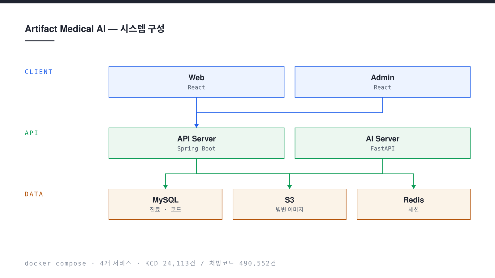

피부 병변 이미지를 올리면 AI 모델이 Top-5 후보 질환과 신뢰도, 그리고 판단 근거를 보여주는 GradCAM 히트맵을 제시한다. 의료진은 이를 참고해 KCD 상병코드와 처방 약품을 직접 확정한다. AI가 진단을 대신하는 것이 아니라, 접수부터 처방·완료·이력 관리까지 이어지는 진료 워크플로우 안에서 판단을 보조하도록 설계한 프로토타입이다. EMR 솔루션 기업 비트컴퓨터와의 산학 협력으로 진행했다.
- 기간
- 2026.03 — 2026.08
- 역할
- 백엔드 · 도메인 설계 · AI 서버 연동
- 팀
- 아티팩트팀 · 산학협력 (비트컴퓨터)
- 스택
- Java 21, Spring Boot 3.5, Spring Security, JPA, FastAPI, PyTorch, MySQL 8.0
- 배포
- Docker Compose 4개 서비스 · Local / AWS S3 전환
Problem
기존 피부 병변 AI 서비스 다수는 “AI가 진단명을 알려주는 것”에 초점을 맞춘다. 그러나 실제 임상 현장에서 중요한 것은 로그인부터 접수, 진료, AI 분석, 진단 확정, 처방, 완료, 이력 관리까지 이어지는 흐름 전체다. 분석 결과가 아무리 정확해도 그 결과가 진료 기록으로 이어지지 않으면 쓰이지 않는다.
동시에 의료 도메인에서는 “AI가 예측한 것”과 “의료진이 확정한 것”을 섞어 기록하면 안 된다. 책임 소재가 흐려지고, 나중에 모델을 바꾸면 과거 진료 기록의 의미까지 달라진다.
Approach
AI 예측과 의료진의 결정을 구조적으로 분리했다. 분석 결과와 처방은 별도 테이블이며, 처방은 분석 없이도 작성할 수 있도록 분석 식별자를 선택 값으로 두었다. AI 서버가 죽어도 진료는 계속되고, 모델을 교체해도 확정 진단 기록은 그대로 남는다.
진료 진행은 도메인 엔티티에 캡슐화한 8단계 상태머신으로 관리했다. 잘못된 순서의 호출은 서비스 계층이 아니라 엔티티에서 거부되므로, 컨트롤러가 늘어나도 상태 규칙이 흩어지지 않는다. 이미지 저장소는 인터페이스로 추상화해 개발은 로컬 디스크, 운영은 S3로 같은 코드가 동작한다.
Result
프론트엔드, 백엔드, AI 서버, 데이터베이스 4개 서비스를 Docker Compose 한 번으로 기동해 접수부터 처방 완료까지 전 구간이 동작하는 프로토타입을 완성했다. KCD 상병코드 약 2만 4천 건과 처방코드 약 49만 건을 검색 가능한 상태로 적재했다.
WITHUS 프로젝트 경진대회(S.M.A.R.T 토너먼트) 최우수상, In-Jeju Challenge 사물인터넷 혁신융합대학사업단 최우수상(총장상)을 받았다.

Implementation
8단계 진료 상태머신
진료 상태 전이를 도메인 엔티티 안에 두었다. 분석 중 유효하지 않은 이미지가 들어오면 진료 중 상태로 되돌리고, 어느 단계에서든 취소할 수 있다. 규칙을 어긴 호출은 예외로 거부된다.
RECEIVED ─▶ IN_PROGRESS ─▶ ANALYZING ─▶ ANALYZED ─▶ DIAGNOSED ─▶ PRESCRIBED ─▶ COMPLETED
▲ │
└─rollback──┘ 잘못된 이미지 → 진료 중으로 복구
(어느 단계에서도 CANCELLED 가능)
상태를 갖지 않는 토큰 인증
비밀번호는 해시로 저장하고, 로그인 시 발급한 토큰을 모든 요청 헤더에 실어 보낸다. 가입 API는 인증 없이 열려 있으므로 관리자 역할의 자가 등록은 서버에서 차단했다. 서명 키에는 기본값을 두지 않아, 설정하지 않으면 서버가 아예 기동되지 않는다.
GradCAM 설명 히트맵
모델이 어디를 보고 판단했는지 보여주는 히트맵을 분석 결과와 함께 저장한다. 전용 라이브러리 없이 PyTorch의 forward hook과 Pillow만으로 구현해 컨테이너 이미지를 가볍게 유지했다. 히트맵 생성이 실패해도 분석 결과 자체는 정상 반환된다.
외부 LLM 호출의 실패 설계
처방 코멘트는 외부 모델이 생성한다. 외부 호출은 실패를 전제로 설계했다. 과부하 응답에는 1초, 2초 간격으로 최대 세 번까지 자동 재시도하고, 키가 설정되지 않은 환경에서는 오류 대신 안내 문구를 돌려준다. 출력 형식은 정확히 두 줄로 파싱한다.
대용량 코드 마스터 적재
상병코드와 처방코드는 합쳐서 55만 행이 넘는 엑셀 파일로 들어온다. 전체를 메모리에 올리지 않도록 스트리밍 방식으로 읽고, 서버 기동을 막지 않도록 별도 스레드에서 비동기로 적재한다. 기동 직후 검색 결과가 비어 있다면 적재가 아직 끝나지 않은 것이다.
Retrospect
- AI 출력과 사람의 확정을 같은 테이블에 두지 않은 선택이, 모델을 바꿀 여지를 그대로 남겨 주었다.
- 상태 전이를 서비스가 아니라 엔티티에 두니 잘못된 호출이 컨트롤러까지 올라오지 않았다.
- 저장소를 인터페이스로 열어 둔 덕분에 로컬 개발과 클라우드 운영이 같은 코드로 돌아갔다.
- 외부 모델 호출은 정상 응답보다 실패 경로를 먼저 설계해야 한다는 것을 배웠다.
- 남은 과제는 테스트 코드와 배포 자동화, 그리고 역할별 접근 제어를 더 잘게 나누는 일이다.